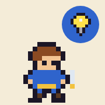
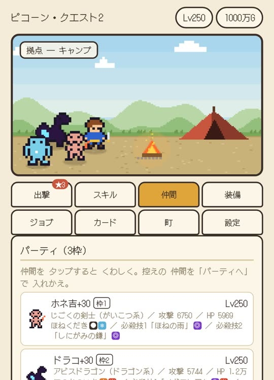

タップで 連撃。戦いの中で 技を ひらめき、倒した 敵を 仲間に して、どこまでも 強くなる バトルRPG。
ver 1.4 10/28 やりこみの その先を 追加（隠しボス・転生 など）
FEATURES
ピコーン！
ひらめき技を 使っていると、ときどき 頭に 電球が ともって 新しい 技を おぼえる。格上の 敵ほど ひらめきやすい。
ひらめき技は 全57種。剣・拳・杖・弓・短剣・槍・刀、武器ごとに 技の 系統が ちがう。
倒れた 敵が ときどき おきあがって 仲間に なる。スライム、ウルフ、ゴーレム、ドラゴン…… パーティは 3体まで。
仲間は 自動で 戦い、ゲージが たまると 必殺技。同じ 種族を 合体させると 強くなり、まれに 上の 種族に 化ける。
打ち上げた 敵には だれの 攻撃でも 1.5倍。浮いている あいだは 攻撃して こない。攻撃 → ひらめき技 → 職業技 と ちがう 技を 続けて 出すと 連携で 威力が 上がる。
赤い「！」が 出た 敵は もうすぐ 攻撃してくる。打ち上げて 止めよう。
6つの ステージを 抜けると 次の 周回へ。周回ごとに「飛ぶ敵が 多い」「敵が かたい」などの 特色が つく。
ジョブ 20種、装備づくりと 精錬、カード 30種、拠点の 施設。周回を すすめると 倍速や 新しい 遊びが ひらく。
MOVIE
音が 出ます。
ひらめき技
各武器の 最初の 技だけ 見せておく。のこりは 戦いの中で 見つけてほしい。
ぜんぶで 57種。いまの 武器の 系統の 技だけが 使える。
HOW TO PLAY
1回の 出撃は 数分。くり返すほど 強くなる。
| 攻撃 | いちばん 大きい ボタン。武器で 変わる（剣は 斬り上げ、拳は 連打、杖は 範囲） | 1 |
|---|---|---|
| ひらめき技 | 下の 青い ボタン。使うと ときどき 新しい 技を ひらめく | Q W E R |
| 職業技 | 攻撃や 技で 力が たまり、満タンで 光ったら おす | A |
| ポーズ | 戦闘画面の ❚❚ | P / Esc |

AND MORE
何度も 越えた その先に、まだ 見ぬ ものが 待っている。くわしくは 遊んで たしかめてほしい。
UPDATE
Q & A
かかりません。広告や 課金も ありません。
スマホ・タブレット・PCの ブラウザで 遊べます。PCでは キーボードでも 操作できます。インストールは いりません。
遊んでいる ブラウザに 自動で 保存されます。べつの 端末に うつすときや 念のための バックアップは、設定の「書き出す」で 文字に して とっておき、「読みこむ」で もどせます。ブラウザの データを 消すと セーブも 消えるので ご注意ください。
ブラウザの 仕組みで、画面を 一度 タップするまで 音は 鳴りません。設定の「音と 振動」でも 切りかえられます。
設定の「演出の 重さ」を 軽量 / 最軽量に すると、飛び散る粒や ダメージ数字が へって 軽くなります。「30fpsで 動かす」も 効きます。
大丈夫です。最初の ステージで 操作を ひとつずつ 説明します。
ひらめく 準備は できた？